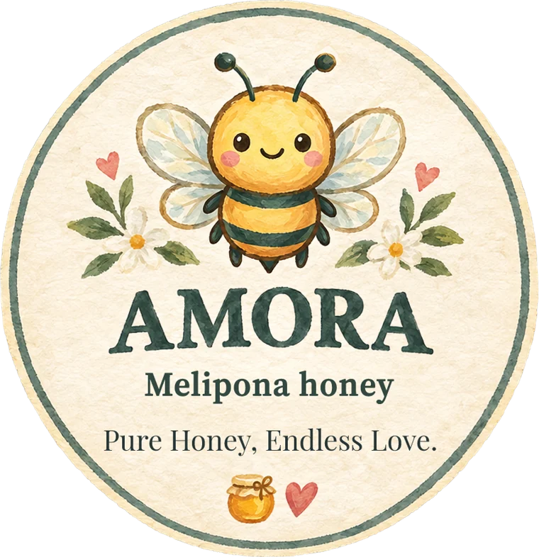

Lo que tienes en tus manos
La historia de tu miel
Miel de Xunáan Kaab, la abeja sin aguijón que los mayas cuidaron durante siglos. Desliza para conocerla, descubrir lo que hace única a su miel y todo lo bueno que guarda.
Conoce a la abeja
Conoce a quien la hizo
Xunáan Kaab
“La señora abeja” · Melipona beecheii
Es una abeja nativa de la Península de Yucatán. Los mayas la consideraban sagrada y la cuidaron durante siglos dentro de troncos huecos llamados jobones, colgados en los patios de sus casas.
Es una especie que hay que proteger: cada frasco de su miel también ayuda a que siga existiendo.
Sin aguijón
No pica. Es tranquila y gentil.
Hija de la selva
Poliniza flores nativas de la península.
Ollitas de cera
Guarda su miel en pequeños cántaros, no en panal.
Herencia maya
Hoy la cuidan meliponicultores que mantienen viva la tradición.
Lo que guarda tu frasco
Una miel escasa y preciosa
Una sola colmena de melipona produce muy poca miel al año, apenas una fracción de lo que da una abeja común. Por eso, en la cultura maya, se reservaba para ocasiones especiales y para sanar.
Más fluida
Tiene más agua que la miel común; corre como un hilo de luz.
Sabor que sorprende
Dulce con un toque ácido, casi cítrico, y aroma a flores de la selva.
Hecha a mano
Se cosecha ollita por ollita, sin prisas ni procesos industriales.
Sus bondades
Lo que la tradición maya ha sabido por generaciones, y lo que la ciencia empieza a estudiar:
Para la garganta. Se toma a cucharaditas para suavizar la tos y la irritación.
Para la piel. Usada tradicionalmente sobre heridas y quemaduras leves.
Para los ojos. En la medicina tradicional maya es famosa por su uso en remedios para la vista.
Antioxidante y antibacteriana. Diversos estudios han encontrado estas propiedades en la miel de melipona.
Usos tradicionales; no sustituyen la opinión de un médico.
Cómo disfrutarla
Sola, una cucharadita, despacito.
Sobre fruta fresca o un queso suave.
En un té tibio, nunca hirviendo, para cuidar sus propiedades.
Bien cerrada, en un lugar fresco o en el refri.
Pura miel,
amor infinito.
Cuando se acabe el frasco, que te quede lo dulce. Gracias por existir, Paula.
— Jimmy